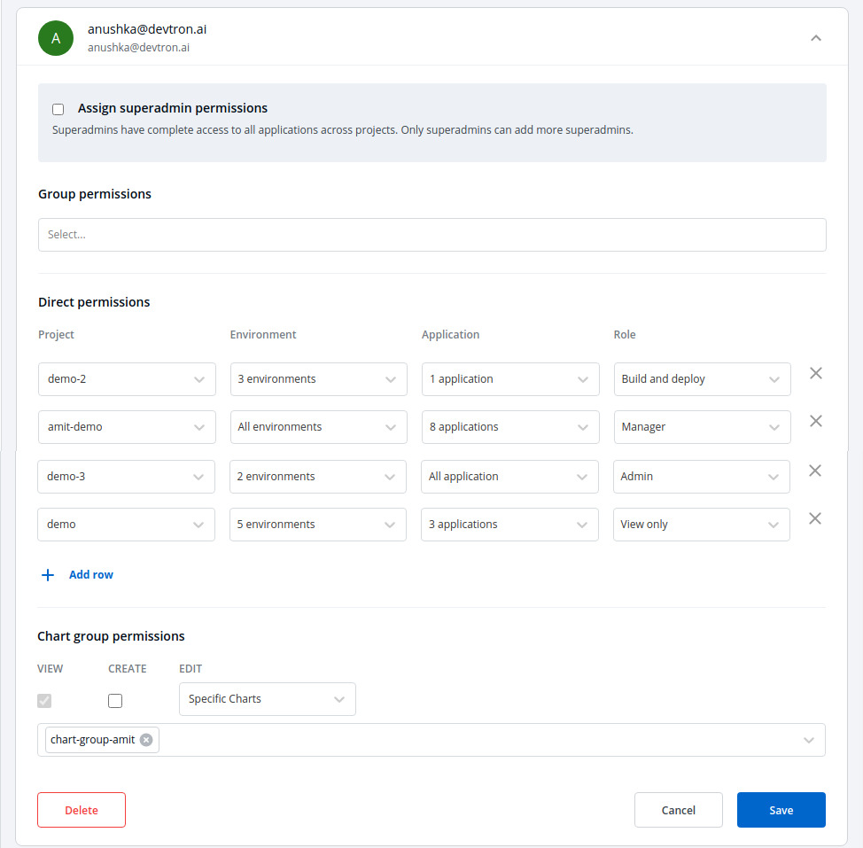
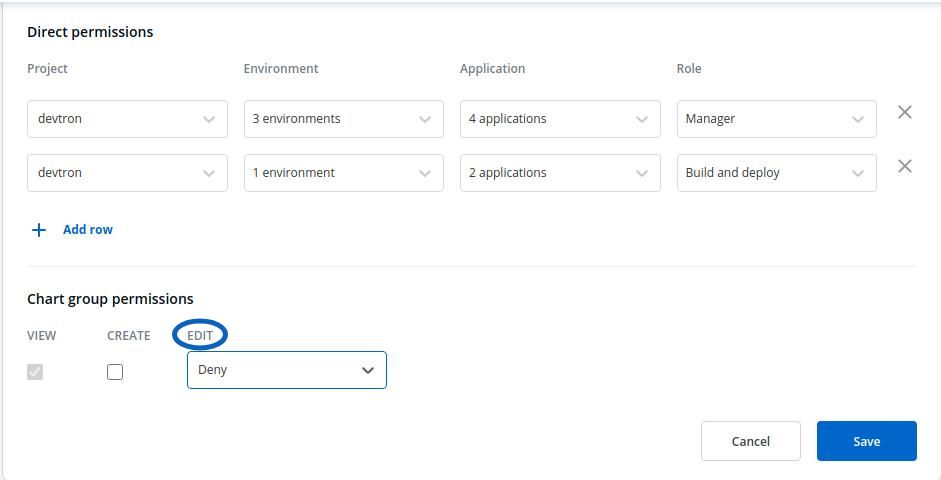

User/Group Authorization
Authorization is used to determine what functions, data, or other parts of an application the user or the group has the access to.
You can manage the User and Group access to Projects, Applications, Chart Groups, Environments, and Roles using the User Access feature.
View Access Levels/Role
There are four different view access levels/Role available for both User and Group, namely:
-
View Only : User(s)/Group(s) can view only selected applications.
-
Build and Deploy : User(s)/Group(s) can build and deploy applications on selected environments.
-
Admin : User(s)/Group(s) can view trigger and edit selected applications.
-
Manager : User(s)/Group(s) can view, trigger and edit selected applications, can also manage user access.
To control the access of User and Group,
Go to the left main panel -> Select Global Configurations -> Select User Access
Users
1. Add new user
Click on Add New User, to add one or multiple users.

2. Create User Permissions
If you do not wish to give the users super admin permissions, then control their access in Direct Permissions section. Manage the project, Environment, Application and Role access given to the users.

You can add multiple rows, for Direct Permissions.
Once you have finished assigning the appropriate permissions for the listed users, Click on Save.
3. Edit User Permissions
You can edit the user permissions, by clicking on the downward arrow.

You can then edit the user permissions here.

After you have done editing the user permissions. Click on Save.
If you want to delete the user/users with particular permissions. Click on Delete.
4. Manage Chart Group Permissions
You can also manage the access of users to Chart Groups in your project.
You can either give the users permission to Create or Edit.
Click on the check box of Create, if you want users to create, view, edit or delete chart groups.
Click on the checkbox of Edit, if you want to allow or deny users to edit the chart groups.
Select on Deny option from the drop-down menu, if you want to restrict the users to edit the chart groups.

Select Specific Charts option from the drop-down menu, and then select the chart groups for which you want to allow users to edit, from the other drop-down menu.

Once you have configured all the required permissions for the users, Click on Save.
Groups
The advantage of the groups is to define a set of privileges like create, edit or delete for the given set of resources that can be shared among the users within the group. Users can be added to an existing group to utilize the privileges that it grants.
1. Add new Group
Click on Add Group, to create a new group.

Enter the Group Name and Description.

2. Create Group Permissions
Once you have given the group name and group description.
Then, control the access permissions of groups in Direct Permissionssection. Manage the project, Environment, Application and Role access given to the groups.

You can add multiple rows, for Direct Permissions section.
Once you have finished assigning the appropriate permissions for the listed users, Click on Save.
3. Edit Group Permissions
You can edit the group permissions, by clicking on the downward arrow.

You can then edit the user permissions here.

After you have done editing the group permissions. Click on Save.
If you want to delete the groups with particular permissions. Click on Delete.
4. Manage Chart Group Permissions
The chart group permissions for the group will be managed in the same way as for the users. For reference, check Manage chart group permissions for users